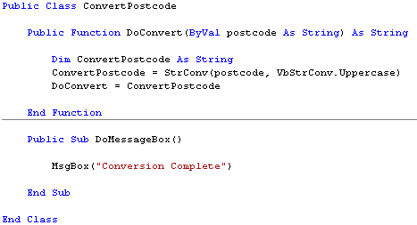
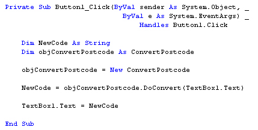
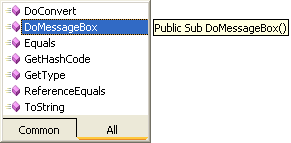

Creating Methods that don't return a value
This tutorial follows on from the previous part: Creating Methods. If If you haven't yet read the introduction to Classes, here it is: VB .NET Classes and Objects.
In the last part, you created a Method that returned a value. But you Methods do not have to return a value. In which case, you create a Sub and not a Function, like we did the last time. Add the following code to your Class:
Public Sub DoMessageBox()
MsgBox("Conversion Complete")
End Sub
This is a Public Sub that doesn't do anything terribly useful. But it will illustrate how to write code to set up a Method that doesn't return a value. Here's what your coding window should look like:

To run your new method, return to your Button code. You should have this, remember:

On a new line after Textbox1.Text = NewCode, type the following:
objConvertPostcode.DoMessageBox()
After you type the name of your Object variable, then a full stop, you get the message box popping up. This time, your new Method is on the list:

The tip next to the pop up box is telling you that the Method is a Sub, and that it therefore doesn't return a value. The Sub also has no parameters inside of the round brackets, so you don't have to hand anything to it.
You can double click the new Method to add it to your code. When you press the return key on your keyboard, VB adds a pair of round brackets to the end of the line.
So calling a Method that doesn't return a value is just like calling a Sub. The difference is that you need the name of your Object variable first. If we had set up the Sub inside of the Form1 code, we would have just done this to call it:
DoMessageBox()
But because the Sub was inside of the Class, you first type the name of your Object variable:
objConvertPostcode.DoMessageBox()
Run your code again. Click your button. You should see two things happen: one, the text in the textbox will change; and two, you should see message box popping up confirming the change.
Now that you know how to create Methods for your Classes, in the next part you'll see how to create your own Properties.